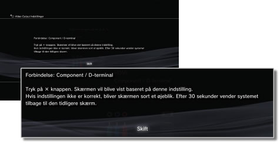
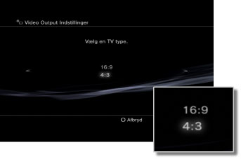
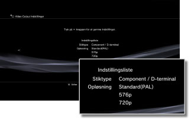

Video Output Indstillinger
Juster systemets videooutputindstillinger. Vælg de bedste udgangsindstillinger for det fjernsyn, der bruges.
1. |
Kontroller den opløsning, dit fjernsyn understøtter.
Opløsningen (videotilstanden) varierer, afhængigt af fjernsynets type. Yderligere oplysninger fremgår af instruktionerne, der fulgte med fjernsynet.
|
2. |
Vælg  (Indstillinger) > (Indstillinger) >  (Skærmindstillinger). (Skærmindstillinger).
|
3. |
Vælg [Video Output Indstillinger].
|
4. |
Vælg stiktypen til dit fjernsyn.
Opløsningen (videotilstanden) afhænger af den benyttede stiktype.

| Indgangsstikket på fjernsynet |
Understøttede videotilstande (NTSC-region) *1 |
Understøttede videotilstande (PAL-region) *1 |
| HDMI |
1080p/1080i/720p/480p |
1080p/1080i/720p/576p |
| Component / D-terminal *2 |
1080p/1080i/720p/480p/480i |
1080p/1080i/720p/576p/576i |
| Composite / S Video*3 |
480i |
576i |
| AV MULTI / SCART*4 |
480p/480i |
576p/576i |
| *1 |
Indstillingsmulighederne for videotilstanden afhænger af det område, PS3™-systemet er købt i. I Nordamerika, Asien og andre NTSC-områder, vises 480i-videotilstand som [Standard (NTSC)]. I Europa og andre PAL-områder, vises 576i-videotilstand som [Standard (PAL)]. Yderligere oplysninger fremgår af instruktionerne, der fulgte med til produktet.
|
| *2 |
D-stikket bruges primært i Japan. D1-D5 understøtter følgende opløsninger:
D5: 1.080p/720p/1.080i/480p/480i
D4: 1.080i/720p/480p/480i
D3: 1.080i/480p/480i
D2: 480p/480i
D1: 480i
|
| *3 |
Composite er stiktypen, der benyttes til tilslutning af AV-kablet, der medfølger til PS3™-systemet. S VIDEO er et format, der primært benyttes i Japan.
|
| *4 |
AV MULTI er et format, der primært benyttes i Japan. SCART er et format, der primært benyttes i Europa. Hvis [AV MULTI eller SCART] vælges, vises skærmbilledet, hvor du kan vælge udgangssignalets type.
|
|
5. |
Skift Video Output Indstillinger.
Skift opløsning på video outputsignalet. Afhængigt af stiktypen, der blev valgt i trin 4, vises dette skærmbillede muligvis ikke.

|
6. |
Angiv opløsningen.
Vælg alle opløsninger, der understøttes af det anvendte tv. Video bliver automatisk vist i den højeste opløsning, der er mulig for det indhold, der afspilles.*
*Videoopløsningen vælges i følgende prioritet: 1080p > 1080i > 720p > 480p/576p > Standard (NTSC: 480i/PAL: 576i).
Hvis du valgte [Composite / S Video] i trin 4, vises der ingen skærm til valg af opløsninger.
Hvis du valgte [HDMI], kan du også vælge at få opløsningen justeret automatisk (HDMI-enheden skal være tændt). I dette tilfælde vises skærmen til valg af opløsning ikke.

|
7. |
Vælg tv type.
Vælg type for det pågældende tv. Skal vælges, når der kun skal sendes SD-opløsning (NTSC: 480p/480i, PAL: 576p/576i), f.eks. når der blev valgt [Composite / S Video] eller [AV MULTI / SCART] i trin 4.

|
8. |
Kontroller dine indstillinger.
Bekræft, at det viste billede har den korrekte opløsning til tv'et. Tryk på  -tasten for at gå tilbage til den foregående skærm og gennemse indstillingerne. -tasten for at gå tilbage til den foregående skærm og gennemse indstillingerne.

|
9. |
Gem dine indstillinger.
Videooutputindstillingerne gemmes på PS3™-systemet. Du kan nu fortsætte med at angive indstillinger for lydoutput. Yderligere oplysninger om lydoutput findes i denne vejledning under (Indstillinger) >  (Lydindstillinger) > [Audio output indstillinger]. (Lydindstillinger) > [Audio output indstillinger].
|
Tips
- Kablet, der skal bruges til gengivelse af en bestemt videotilstand, medfølger muligvis ikke til produktet, og det kan være nødvendigt at købe det separat. Yderligere oplysninger fremgår af dokumentationen, der medfulgte til systemet.
- Hvis videoudgangsindstillingerne ikke svarer til indstillingerne, som det benyttede fjernsyn kræver, bliver skærmen muligvis sort, når opløsningen ændres. Skærmen skulle imidlertid automatisk gendanne den oprindelige opløsning efter et stykke tid. Hvis skærmen forbliver sort i mere end 30 sekunder, skal du slukke systemet. Tryk derefter på POWER-knappen på fronten af systemet i mindst fem sekunder for at tænde systemet igen. Video Output Indstillingerne nulstilles automatisk til standardopløsningen.
- Hvis der sluttes en enhed, som ikke er kompatibel med HDCP-standarden (High-bandwidth Digital Content Protection), til systemet vha. et HDMI-kabel, kan der ikke sendes video og/eller lyd fra systemet.
- Ophavsretligt beskyttede Blu-ray-videodiske kan kun afspilles ved 1080p via et HDMI-kabel, der er sluttet til en enhed, som er kompatibel med HDCP-standarden.